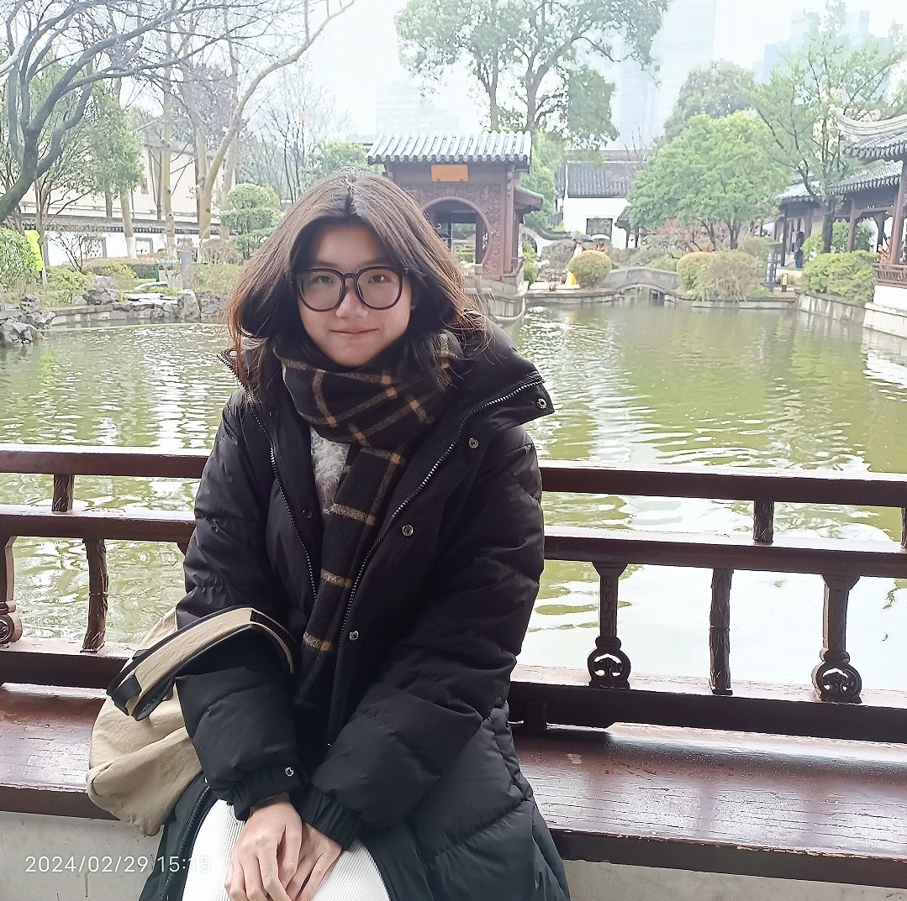

Multi-level Encoder with Global Topic for Task-oriented Dialogue Summarization
ICASSP 2025 · IEEE International Conference on Acoustics, Speech and Signal Processing
I received my B.Eng. in Data Science and Big Data Technology from South China Agricultural University in 2025. Previously, I was a remote research intern at Mohamed bin Zayed University of Artificial Intelligence (MBZUAI).
My research focuses on trustworthy and efficient foundation models. I am particularly interested in multimodal and multilingual reliability, long-context reasoning, and mechanistic interpretability, with the goal of understanding how model interventions and inference-time constraints shape internal representations, behavior, and generalization.

ICASSP 2025 · IEEE International Conference on Acoustics, Speech and Signal Processing
Manuscript, 2026
Manuscript, 2026